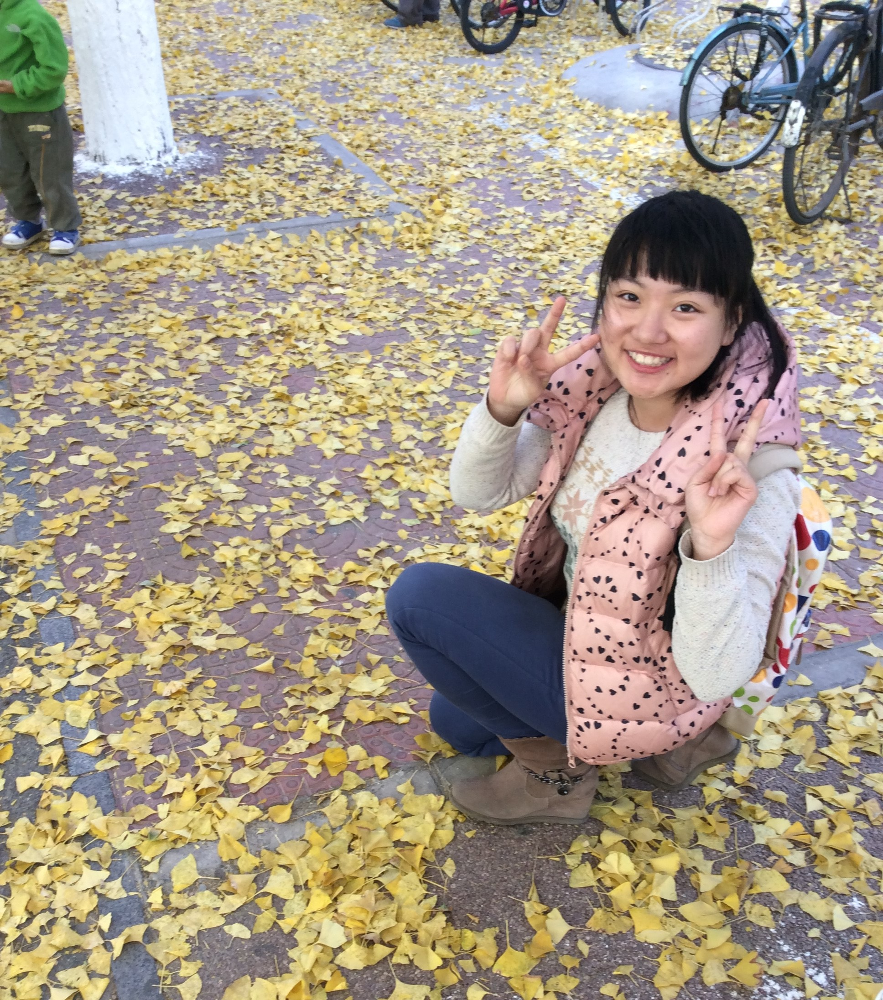
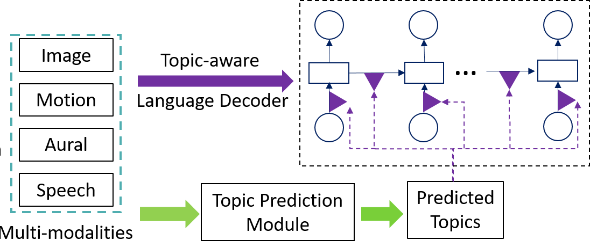
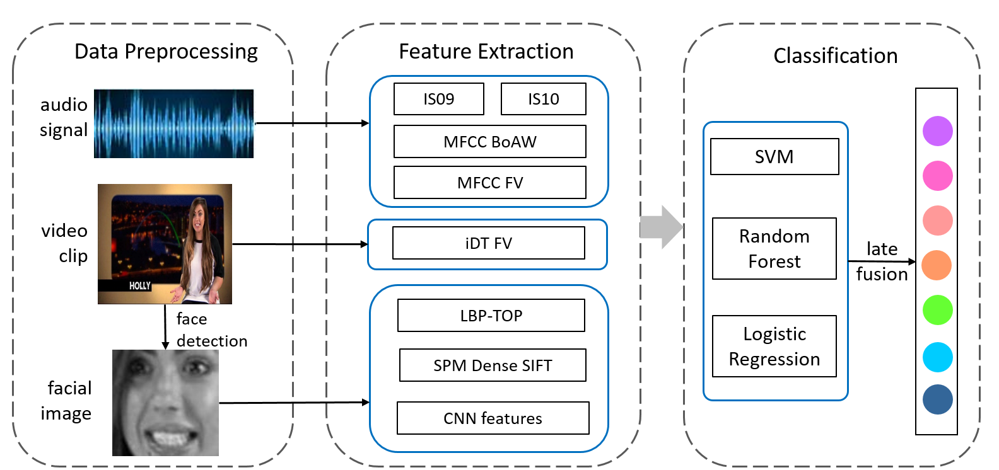

|  |
|
About me
I am a PhD student at Renmin University of China, advised by Professor Qin Jin. My CV can be found here.
My research objective is to make the human-machine interactions more natural such as understanding human emotions or communicating with natural language sentences.
My research area is in the interdisciplinary field of multimedia content analysis, computer vision, affective computing and deep learning.
Selected Papers
 |
Shizhe Chen, Jia Chen, Qin Jin, Alexander Hauptmann Captioning with Guidance of Multimodal Latent Topics ACM Multimedia, 2017. [Paper] |
 |
Qin Jin, Shizhe Chen, Jia Chen, Alexander Hauptmann Knowing Yourself: Improving Video Caption via In-depth Recap ACM Multimedia, 2017. |
|  | Shizhe Chen, Jia Chen, Qin Jin Generating Video Descriptions with Topic Guidance ICMR, 2017. [Paper] |
 |
Shizhe Chen, Qin Jin Multi-modal Conditional Attention Fusion for Dimensional Emotion Prediction ACM Multimedia, 2016. [Paper] |
|  | Shizhe Chen, Xinrui Li, Qin Jin, Shilei Zhang, Yong Qin Video Emotion Recognition in the Wild based on Fusion of Multimodal Features ICMI, 2016. |
Selected Awards
- Ranked 1st in NIST Trecvid 2017 Video to Text Task.
- Ranked 1st in ACM Multimedia 2016 and 2017 Video to Language Grand Challenge.
- Ranked 2nd in AVEC 2016 Continuous Emotion Recognition Sub-challenge.
- Ranked 2nd in CCPR 2016 Multimodal Emotion Recognition Challenge.
- Ranked 1st in MediaEval 2016 Emotion Impact of Movies Subtask.
- National Scholarship for Ph.D. Students in 2016.
- ACM Multimedia 2016 Student Travel Grant.
- Second Prize in the Chinese Big Data Contest P2P Fraud Detection Sub-contest 2015.
- Second Prize in IBM Bluemix Cognitive Computation Development Contest 2015.
- First Prize in National College Student Information Security Contest 2014.
- Second Prize in the Chinese Big Data Contest Baidu iErmu Sub-contest 2014.
- Meritorious Winner in American Mathematical Contest in Modeling 2014.
- National Second Prize in China Undergraduate Mathematical Contest in Modeling 2013.
- National Scholarship for Undergraduate Students in 2013.